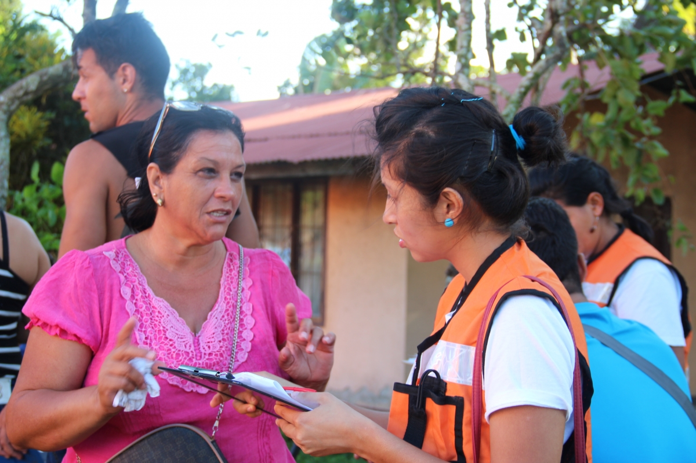

Bloqueados en Costa Rica: la larga espera de los migrantes cubanos
Juan Luis y su familia salieron de Cuba el 8 de noviembre de 2015. El 10, empezaron “la ruta” en Ecuador y el 17 entraron a Costa Rica. Solo llegar a este país y se enteraron que no podían continuar su viaje hacia Atlanta – Estados Unidos. Allí inició una larga espera que supera ya los 40 días.
“Nosotros corrimos con suerte, otros lo han pasado peor. Yo quiero hacer una película para que el mundo sepa lo que vivimos”, nos cuenta Juan Luis, un taxista de 28 años que viaja con su esposa Laura de 19, y Mario, su hijo de un año.
Viven con otras 65 personas en la Iglesia de Zansapote, uno de los 34 albergues de emergencia habilitados por las autoridades. Juan Luis y sus compañeros ayudan en las tareas diarias del lugar, como cocina, limpieza y pintura. Costa Rica aloja en total a 5285 migrantes. Por lo general, el viaje de Cuba a Estados Unidos demora un mes y cuesta entre US$2500 y $5000 por persona. Pero desde noviembre, a los cubanos varados en Costa Rica les está tomando más de dos meses y el costo aumenta cada día.
La ruta centroamericana
La mayoría de los migrantes salen de Cuba con las coordenadas precisas y los contactos necesarios para pasar de país en país. Las redes de tráfico de personas o “coyotes” les esperan, otros se aventuran por su cuenta, basados en información que les dieron los que ya hicieron el trayecto antes. Se estima que unos 25 000 cubanos han ingresado a los Estados Unidos en 2015, la mayoría a través de la ruta centroamericana.
La travesía inicia con un vuelo comercial de La Habana a Quito, en Ecuador. Luego continúa a tramos, en su mayoría en auto, partes en bote y otras caminando – la mayoría del tiempo de noche. Después, atraviesan Colombia, hasta llegar a Panamá, y a Costa Rica gracias a visa de tránsito temporal.
Así era hasta el 15 de noviembre, cuando Nicaragua cerró sus fronteras a los migrantes cubanos, 800 de ellos fueron devueltos a la fuerza hacia Costa Rica. Desde ese día, militares nicaragüenses custodian la frontera. Para detener el flujo, Ecuador implementó el requisito de visa para los cubanos, desde el 1 de diciembre y Costa Rica suspendió las entregas de visas el 19 de diciembre. El saldo es unos 8000 cubanos varados en Costa Rica, otros 1000 en Panamá y un número no determinado en camino entre Colombia y Ecuador.
Ayuda de emergencia
“Las Naciones Unidas, junto a la Organización Internacional para las Migraciones (OIM) están asistiendo a las autoridades para la atención integral de los migrantes. Varios mecanismos y recursos han sido dispuestos para la atención humanitaria de esta crisis migratoria,” nos cuenta Alice Shackelford, Coordinadora Residente del Sistema de las Naciones Unidas en Costa Rica. “Nuestros técnicos y especialistas apoyan a la Comisión Nacional de Emergencias (CNE), además estamos distribuyendo paquetes de higiene personal. Trabajamos para mejorar las condiciones de vida en los albergues, mientras se logra una solución.
Las Naciones Unidas y sus socios humanitarios han presentado un plan de respuesta a los donantes para asegurar los recursos necesarios, mientras especialistas y voluntarios trabajan en el terreno en mejorar los registros, brindar apoyo psicosocial, y entregar paquetes de higiene y asesoría a los migrantes.
Las necesidades básicas de los migrantes están siendo cubiertas por el Gobierno de Costa Rica. El país ha gastado alrededor de $2,5 millones en atención a los migrantes y ha expedido 5380 visas de transito temporal, las cuales son renovadas a medida que vence el plazo.
“Esta es una situación atípica para Costa Rica: el número de personas en los albergues ya ha superado a registros anteriores por desastres”, nos comenta Eduardo Navarro, Coordinador de proyectos de OIM. “Conocer exactamente la población de cada albergue, sus necesidades especiales, condiciones médicas y otras vulnerabilidades garantizará una mejor atención, es por eso que la OIM está apoyando a las autoridades con el registro y censo de los albergues para tener un panorama real de la población y atenderles de acuerdo a sus necesidades.”
Una larga espera
En La Cruz, un poblado de 25 000 habitantes ubicado a 20 km de la frontera con Nicaragua, los cubanos están por todas partes, en pequeños negocios, farmacias, almacenes, haciendo filas frente a empresas de retiro de remesas y en sitios de recarga de teléfono celular. Siempre están revisando su teléfono móvil, leyendo noticias en las redes sociales o hablando con algún compañero que logró “coronar” y envía fotos desde México o los Estados Unidos.
“Ya pasamos lo peor… aventurarme con los coyotes a Nicaragua no es una opción”, indican Laura y Juan Luis. Los que lo intentan les roban y les dejan tirados en el camino y se tienen que devolver… algunos, muy pocos, han logrado llegar – pero el riesgo es muy grande, así que vamos a esperar a que esto se solucione”.

{kind=link}
{kind=link}